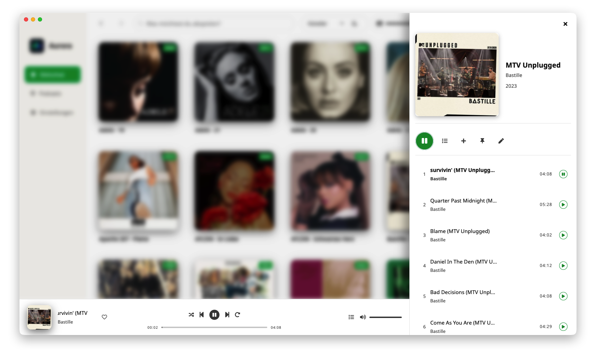
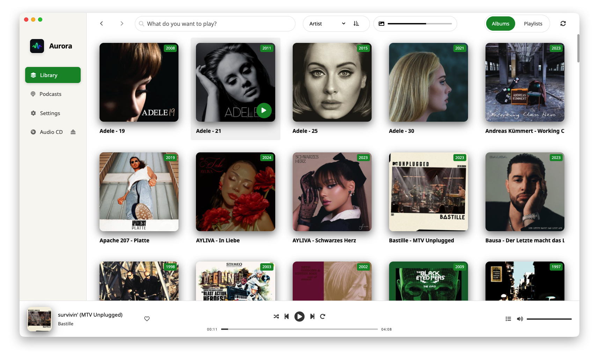
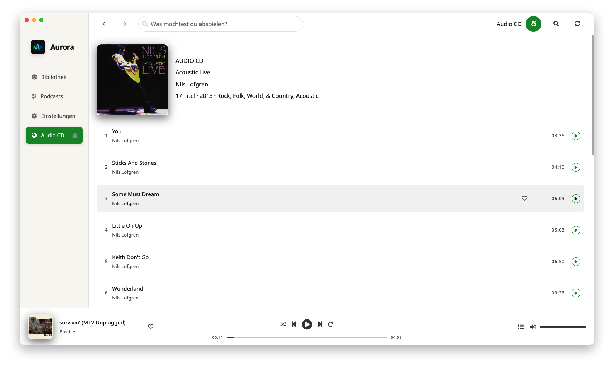

High-Fidelity Playback
Transparent playback info, responsive controls, and a queue-first model optimized for long listening sessions.
Aurora Pulse combines high-fidelity desktop playback, robust collection workflows, and practical device sync in one cohesive environment. It is built for listeners who care about quality, transparency, and ownership instead of cloud lock-in.

The core experience is designed around continuity. You can move between library navigation, queue control, playback tuning, and remote output without losing context. Sideview-first details, topbar actions, and consistent interaction patterns reduce navigation overhead, especially in larger collections where speed and orientation matter.
This is the same design philosophy that guides ongoing work across the desktop app and connected launcher ecosystem.
Transparent playback info, responsive controls, and a queue-first model optimized for long listening sessions.
Multi-band equalization, device correction profiles, and headroom compensation in one practical tuning workflow.
Hardened remote renderer control with stronger transition handling and bidirectional synchronization improvements.
Reliable sync with ETA, resume, cancel, and improved robustness for reconnect and interruption scenarios.
Manual and rule-based playlists with stronger artwork generation and stable behavior in mixed collections.
Discovery, subscriptions, and episode refresh fully integrated into the same playback environment.
Aurora Pulse is not only a player, but also a long-term library companion. CD import is oriented toward FLAC-centric archival quality with metadata-aware flows that reduce cleanup work after import. Local metadata editing and search-driven playback are integrated directly into browsing, so curation remains part of daily listening instead of a separate maintenance task.


Aurora Pulse is available for macOS (Apple Silicon and Intel), Windows, and Linux (Flatpak). Release artifacts are published on GitHub. The project is actively developed, with ongoing focus on playback confidence, sync resilience, and stable remote-control behavior.